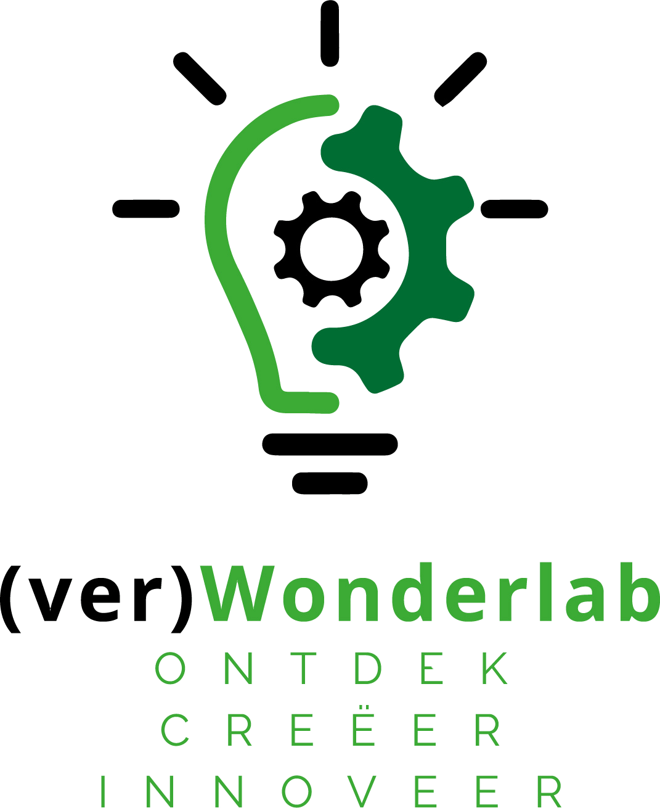

Er is een versleuteld audiofragment onderschept. Beluister de briefing voordat jullie toegang vragen tot het hoofdsysteem.
Welkom in de mainframe van het Verwonderlab. De 'Toekomstvisie 2030' is beveiligd door drievoudige encryptie. Om toegang te verkrijgen, vereist het systeem data-input via AI, robotica en ruimtelijk inzicht. Protocol starten?
De AI-bewaker vereist identificatie via een 5-delig veiligheidsprotocol. Ga het gesprek aan in de terminal hieronder en beantwoord de vragen.
Activeer de Ozobot op de fysieke plattegrond. Vul de ontbrekende kleurcodes in om de route naar de 'Innovatie-hub' te voltooien. Laat de succesvolle route zien aan de Systeembeheerders. Bij een correcte uitvoering ontvangen jullie een unieke autorisatiecode.
Bestudeer het fysieke blokje op tafel. Onderop zien jullie een letter. Om dit op te lossen, moeten jullie de digitale blauwdruk van dit object analyseren in de 3D-omgeving.
OPEN 3D-BLAUWDRUK
Zoek het verborgen getal in het digitale model. Dit getal maakt samen met de letter onder op het blokje de juiste combinatie (bijvoorbeeld A1, B2 etc.).
Alle beveiligingsprotocollen succesvol gepasseerd! Neem jullie blokje mee naar de presentatiewand en plaats het op het nummer dat jullie zojuist hebben ontcijferd. Samen met de andere directeuren vormen jullie letterlijk de fundering van ons lab.
Veel plezier vandaag!